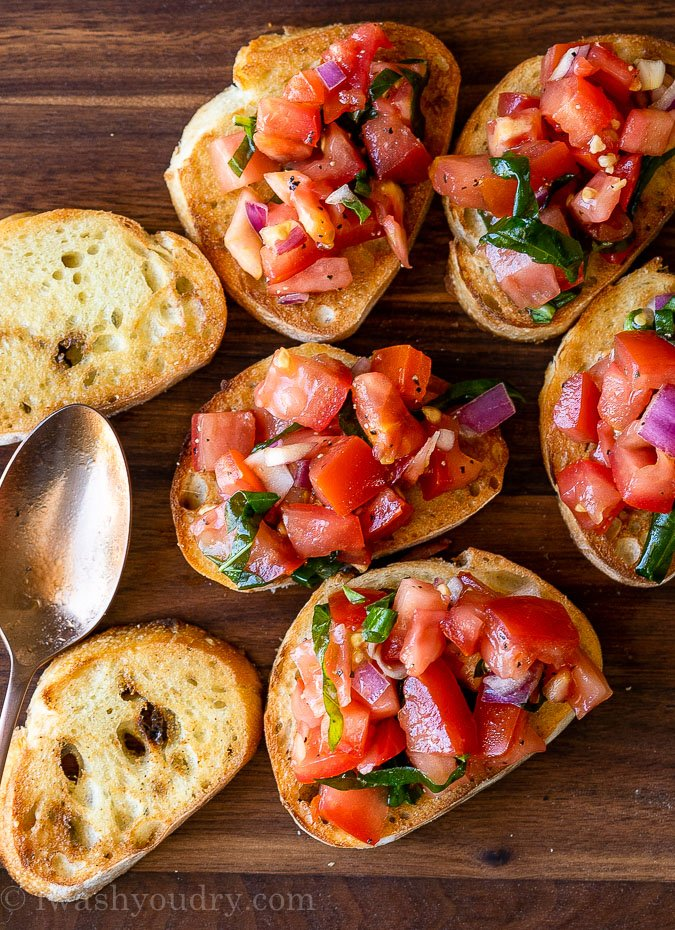

Bruschetta

Ingredients
- tomatoes
- olive oil
- garlic
- basil
- balsamic vinegar
- 1 large baguette
- Make marinated tomatoes: In a medium skillet over medium-low heat, heat oil. Add garlic and cook until lightly golden, 2 to 4 minutes, then remove from heat and let cool.
- In a large bowl, toss together tomatoes, basil, vinegar, salt, and red pepper flakes. Add garlic and oil from skillet and toss to combine. Let marinate for at least 30 minutes.
- Meanwhile, toast bread: Preheat oven to 400°. Brush bread on both sides lightly with oil and place on large baking sheet. Toast bread until golden, 10 to 15 minutes, turning halfway through. Let bread cool for 5 minutes, then rub tops of bread with halved garlic cloves.
- Spoon tomatoes on top of bread just before serving.